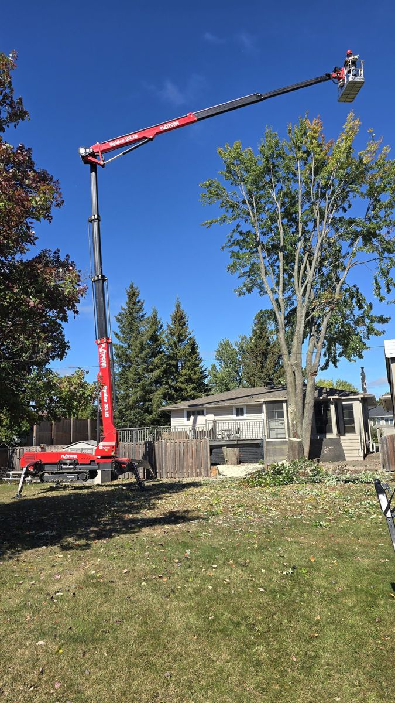
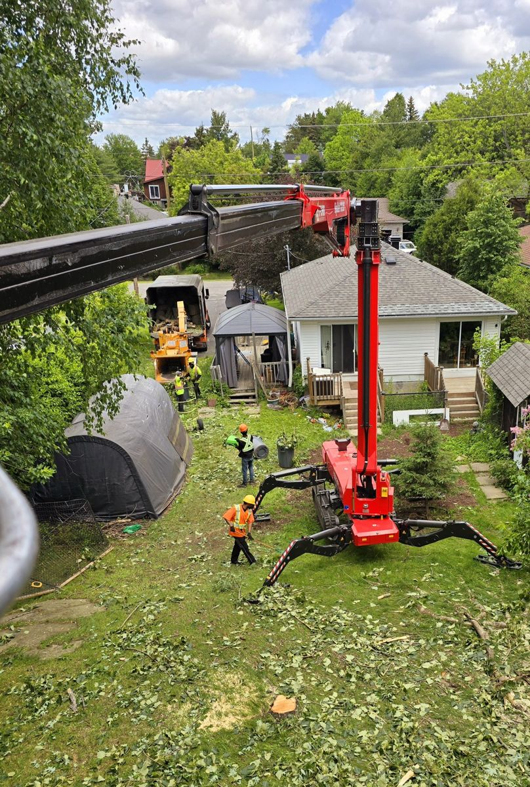
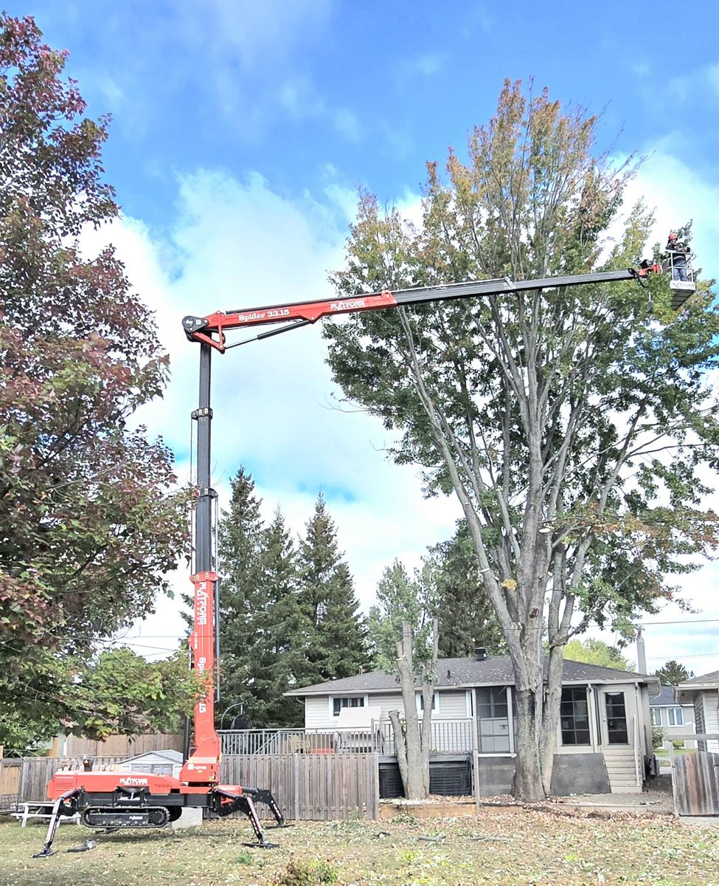
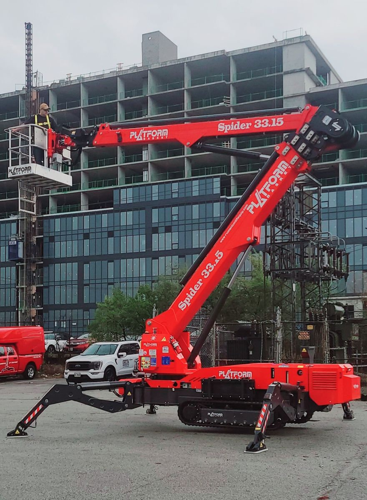
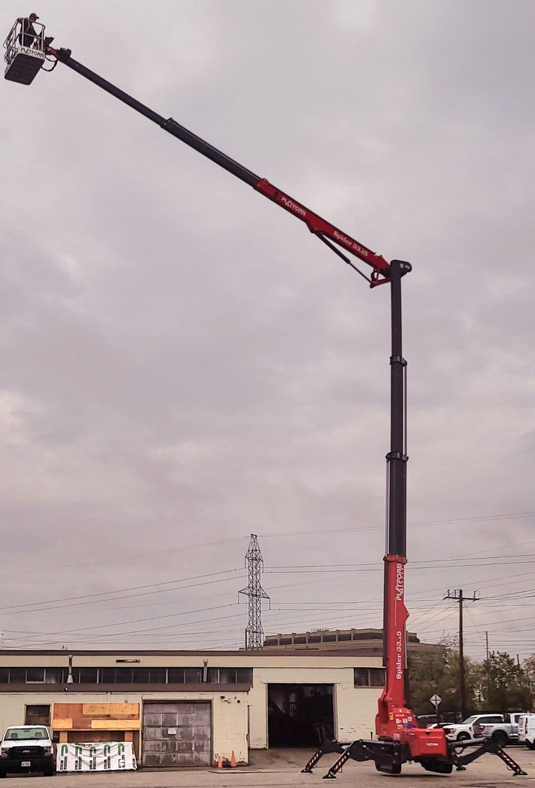
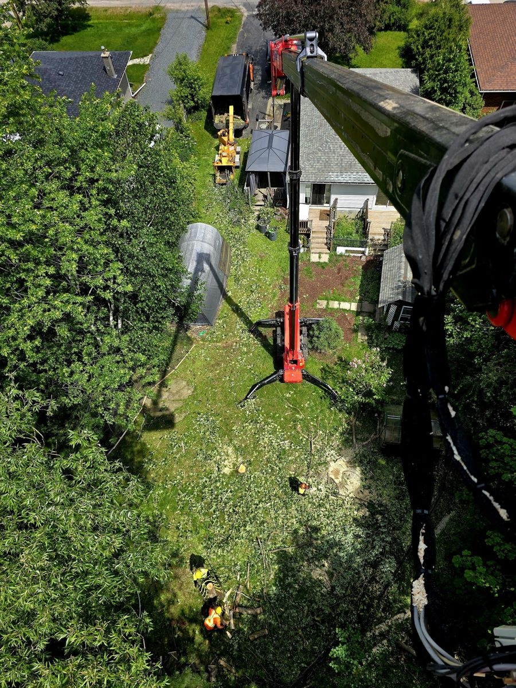

Narrow-Access Removals
Trees behind fences and through gates, reached with a compact tracked spider lift.
Leo Turgeon takes on medium and large trees in dangerous or tight spaces across Sudbury, with a tracked spider lift small enough for side yards and light enough on lawns.
What we do
Trees behind fences and through gates, reached with a compact tracked spider lift.
Tough takedowns handled safely with aerial platforms and chippers.
Risky trees near homes and buildings assessed and removed carefully.
Removed trees turned into valuable mulch for your landscape.
State-of-the-art aerial platforms for height without a full-size bucket truck.
Call Leo for a competitive, free estimate.
Why homeowners call us
Recent work






About Turgeon
Turgeon Tree Removal is led by Leo Turgeon. The specialty is medium-to-large trees in dangerous or tight spaces. The red tracked spider lift fits through doorways and gates and is light enough not to damage lawns, while chippers turn removals into mulch. All technicians are fully insured.
What customers say
★★★★★“I highly recommend Leo!! very responsive, nice, respectful, and timely... removed two trees and the stumps pretty quickly and did a great job with the cleanup.”
Danielle St-Pierre
Quoted verbatim from Google reviews as mirrored publicly.
Service area
Don't see your community? Call, as we often travel for the right job.
Free quote
Call, text, email or send the form. Every quote is free, with no pressure.
Yes. Call Leo at 705-919-2212 for a free, competitive estimate.
Yes. That is the specialty. The spider lift is small enough to fit through gates and light on lawns.
Typically 7am to 9pm daily. Call to confirm.